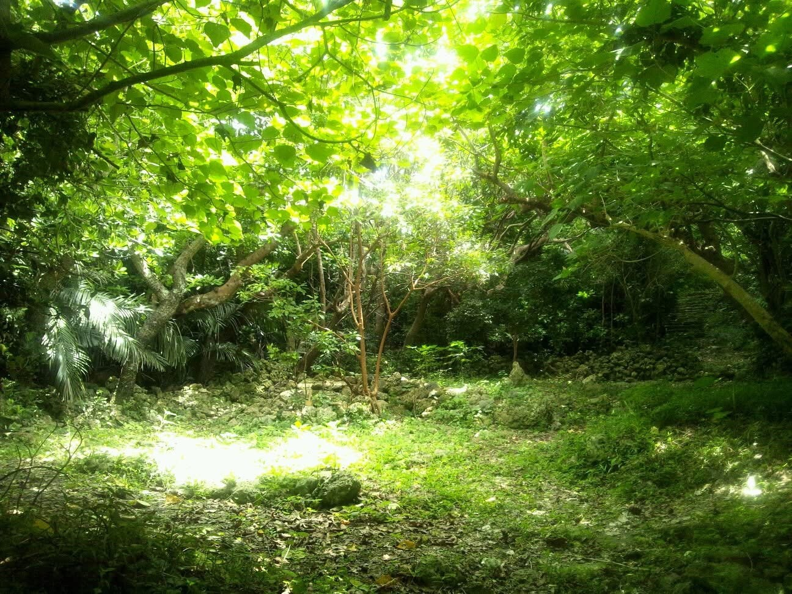

TIME WILL TELL.
AN UNDISCLOSED PROJECT
まだ明かされていないプロジェクト。
JAPAN / OKINAWA / MIYAKOJIMA
日本・沖縄・宮古島。
001 / 100
WHO EDITS
YOUR TIME?
誰が、あなたの時間を編集している？
- Notifications.
- Messages.
- Calendars.
- Algorithms.
Technology has made our lives easier.
But somewhere along the way,
we stopped being the only ones editing our own time.
テクノロジーは、生活を便利にした。
しかしいつからか、
自分の時間を編集するのは、自分だけではなくなった。
EVERYTHING IS DESIGNED
TO CAPTURE YOUR ATTENTION.
ALMOST NOTHING IS DESIGNED
TO GIVE IT BACK.
あらゆるものが、私たちの注意を奪うように設計されている。
それを返すために設計されたものは、ほとんどない。
Humans have always used places
to change their state.
人間は昔から、
「場所」を変えることで、自分の状態を変えてきた。
- ATemples.
- BChurches.
- CMosques.
- DPilgrimage routes.
- ECaves.
- FForests.
But what actually makes a place act on us?
では、場所の何が、人間に作用するのか。
WHAT MAKES
A PLACE
CHANGE US?
何が、場所を人間に作用させるのか。
- Religion?
- Ritual?
- Architecture?
- Nature?
Remove them one by one.
What remains?
一つずつ取り除いたとき、
最後に何が残るのか。
- 01 JAPAN 日本 36°N 138°E
- 02 OKINAWA 沖縄 26°N 127°E
- 03 MIYAKOJIMA 宮古島 24°N 125°E
- 04 UTAKI 御嶽 24°00′N 125°00′E
- 05 TWT 非公開 UNDISCLOSED
UTAKI
In Okinawa, sacred places known as UTAKI
continue to exist as part of a living culture.
沖縄には「御嶽（UTAKI）」と呼ばれる場所が、
今も生きた文化として存在している。
Some appear almost empty.
No monumental architecture.
Sometimes little to tell you that anything is there at all.
Yet people have continued to return.
ほとんど何もないように見える場所もある。
それでも、人はそこへ通い続けてきた。
In 1959, artist Taro Okamoto travelled to Okinawa.
He encountered sacred places stripped of much of the apparatus normally associated with religion.
He described the vertigo of:

「何もないこと」 PLATE 007 1959PART II
FIELD LOG
観察記録
UTAKIIS ATECHNOLOGY.
御嶽を、テクノロジーとして読む。
Not technology made of machines.
A technology of place.
場所と人間の関係をつくる技術。
THIS IS A HYPOTHESIS, NOT A HISTORICAL CLAIM.
We are not trying to reproduce a traditional UTAKI.
We are asking whether something can be learned from the relationship between place, nature, people and time.
私たちは御嶽を再現しようとしているのではない。
場所、自然、人、時間の関係から、何を読み取れるのかを探っている。
SO WE DECIDED
TO FIND OUT.
だから、実際につくって確かめることにした。
JAPAN / OKINAWA / MIYAKOJIMA / TWT
Somewhere in Miyakojima,
an experiment is taking physical form.
宮古島のどこかで、
この仮説を建築として検証するプロジェクトが進んでいる。
Perhaps the closest description
is something like a time machine.
それは、タイムマシンに少し似ているのかもしれない。
Not to travel to the past.
Not to travel to the future.
To change our relationship with time.
過去へ行くためでも、
未来へ行くためでもない。
自分と時間の関係を変えるために。
THIS IS NOT
A HOTEL.
これはホテルではない。
What happens here
will remain a secret for now.
ここで何が起きるのかは、
まだ明かさない。
TIME WILL TELL.
FOLLOW
THE PROJECT
プロジェクトを追う。
A — FIELD NOTES
FIELD NOTES
Notes from the project, sent by email.
Irregular. Only when there is something to record.
プロジェクトからの記録を、メールでお届けします。
配信は不定期。記録すべきことがあるときだけ送ります。
B — FIELD RECORDS
FIELD RECORDS
Images and fragments from the field, on Instagram.
現地からの写真と記録の断片を、Instagramで。